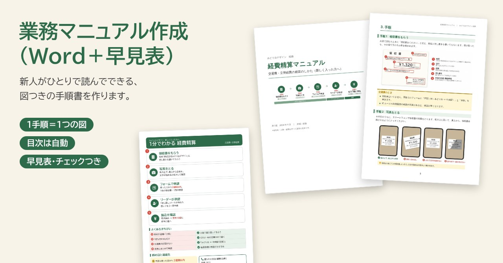
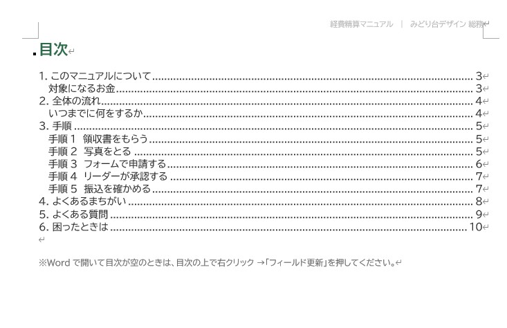
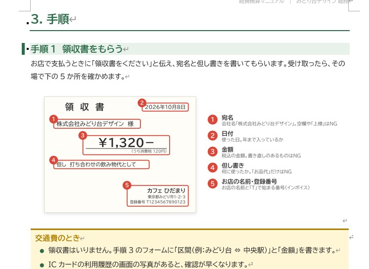
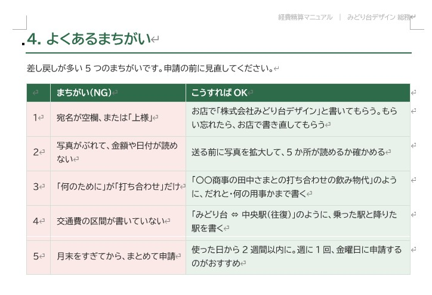

← 制作実績一覧へ戻る
見本ファイルつき
業務マニュアル作成（Word手順書＋早見表）
「人によってやり方がバラバラ」「毎回同じ質問が来る」業務を、新人がひとりで読んでできる手順書にしました。1つの手順に1つの図をつけて、机に貼れる早見表と、提出前のチェックリストもセットにしています。

想定した依頼
「経費精算のやり方が人によってバラバラで、毎月まちがいの差し戻しが多い。新人が読めばひとりでできる手順書を作ってほしい」。社員10〜30人ほどの会社の総務担当からのご相談を想定して作りました。
作ったもの
架空の小さなデザイン事務所「みどり台デザイン」の、交通費・立替経費の精算マニュアルです。領収書をもらうところから、Googleフォームでの申請、リーダーの承認、振込の確認まで、5つの手順で説明しています。
ページを1枚ずつ見る
Wordで開いたところ
見出しはWordの見出しスタイルで作っているので、目次は自動で作られます。手順の図・表もWordの中でそのまま直せます。



工夫した点
- 1つの手順に1つの図：文章は短くして、「どこを見るか・どこに書くか」を赤い枠と番号で示しました。領収書・写真・フォーム・メールの画面ふうの図で、見ればわかるようにしています。
- まちがいを先に見せる：差し戻しが多い5つのまちがいを「NG／OK」で並べ、よくある質問6つと連絡先もまとめました。総務への同じ質問を減らせます。
- あとから会社の人が直せる：Wordの見出しを使って作っているので、目次は自動。内容が変わっても、文章を書きかえて目次を更新するだけです。
- 読む・貼る・確かめるの3点セット：じっくり読む手順書、机に貼る1枚の早見表、提出前に見るチェックリストで、使う場面ごとに形を分けました。
規模と制作時間
- 手順書：Word（A4・10ページ）とPDF。図6枚（全体の流れ・領収書・写真のとり方・フォーム・承認メール・振込のお知らせ）
- 早見表（A4 1枚）、申請前チェックリスト（A4に2枚分）
- 制作：設計（目次と手順の分け方）から、図・Word・早見表・見た目の確認まで 約30分（AIと一緒に作成）
こんなご依頼にも対応できます
- 口頭で教えている業務を、新人向けのマニュアルにしたい
- 文字ばかりの手順書を、図つきで読みやすく作り直したい
- よくある質問をまとめて、問い合わせを減らしたい
注意
会社名・人物・金額・ルールはすべて架空の見本です。実際のマニュアルは、ご依頼主の業務のやり方を聞き取り、画面の写真などをいただいて作ります。